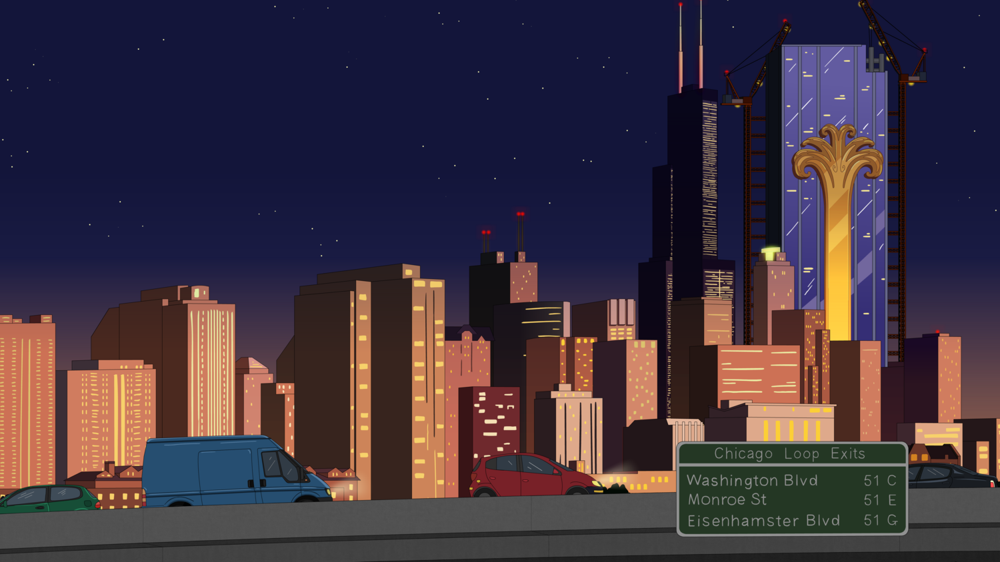

Sobre el lugar
Hollywoo
Hollywhoo es la ciudad dónde se desarrolla la mayoría de la historia de Bojack Horseman, que obtiene su nombre depués de que se retirara la D. La serie se ambienta en un mundo de animales antropormórficos, que conviven con los seres humanos. La ciudad busca ser una versión parodia del Hollywood real, con varios lugares y personajes siendo referencias de lugares y puntos de Hollywood.

Chicago
Ciudad toma especial protagonimo en la sexta temporada de la serie. Diane se muda con su pareja Guy en búsqueda de alejarse de su realción don Bojack. Se muestra recurrentemente un resraurante, estación de tren y la casa donde habita Diane.